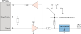

IO133 - Setup — Configure the IO133 input/output blocks
Your model can contain only one Setup block for each I/O module in your target machine.
All the supported I/O types for this module can be configured in the Setup block dialog box. This block will therefore have an impact on all the other driver blocks (Analog input, Analog output, Digital input and Digital output).
The four tabs of the setup parameter dialog box contain the IO133 I/O module configuration settings.
There are two approaches for mapping this block to a specific I/O module installed in your target machine. All modules of the same type must be configured using the same method.
Auto-Search: with the default value -1 the I/O module will be automatically located in the target machine. If you have multiple modules of the same kind, the Module ID defines which module is associated with this block. To see how each I/O module maps to a Module ID, use this Speedgoat API:
speedgoat.getIoInterfaces("TargetName", "mySpeedgoat")
Explicit Addressing: to explicitly define the logical address of the I/O module in the target machine, you can provide the PCI bus and slot numbers as a vector: [bus, slot]. To determine these numbers, run the following command in the MATLAB command window:
speedgoat.getIoInterfaces("TargetName", "mySpeedgoat", "Advanced", true)Note that the PCI address can change whenever an I/O module is added or removed – usually, auto-search is the best option.
The Module ID has two functions:
It defines the logical connection between the Setup block and its I/O blocks
It also informs the auto-search feature of the PCI Slot parameter. If only one I/O module of this type is installed, the Module ID must be set to 1. If n modules are installed, it must be in the range 1:n. Not all the I/O modules installed in the target machine need to be used. To see how each I/O module maps to a Module ID, use this Speedgoat API:
speedgoat.getIoInterfaces("TargetName", "mySpeedgoat")Use this parameter to synchronize multiple IO132-IO135 I/O modules. This parameter ensures that for all the I/O modules concerned:
a) All the analog outputs are updated synchronously.
b) The samples of all the analog inputs are taken at exactly the same time.
In an inter-module synchronization setup, one of the I/O modules is required to be set to Initiator, while all the other I/O modules concerned must be set to Target. This forces all target I/O modules to sample and update their ports synchronously with the Initiator (the Frame Trigger and both Conversion Clocks are transmitted between I/O modules). Note that both DMA and Frame Trigger must be enabled to use this feature. Furthermore, all the modules concerned must have the exact same settings in the Clock Settings for DMA and Frame Trigger sections of the Main tab, and in the DMA Options sections of the Analog Inputs and Analog Outputs tabs. For further information regarding signal requirements to use the inter-module synchronization feature, refer to the IO132-IO135 usage notes.
None: This is the default value. No inter-module synchronization is enabled for the I/O module. Updates and samples occur independently of any other I/O module present in the setup.
Initiator - Front I/O: Choose this setting if you wish to use the module in question as the Initiator of the inter-module synchronization. The synchronization signals (Frame Trigger, Conversion Clock 1 and Conversion Clock 2) are sent over digital I/O 1, digital I/O 3 and digital I/O 5. Note that these lines are not available as normal digital I/O lines when this setting is selected.
Target - Front I/O: Choose this setting if you wish to use the module in question as the Target of the inter-module synchronization. The synchronization signals (Frame Trigger, Conversion Clock 1 and Conversion Clock 2) are received over digital I/O 1, digital I/O 3 and digital I/O 5. Note that these lines are not available as normal digital I/O lines when this setting is selected.
Initiator - Rear I/O: Choose this setting if you wish to use the module in question as the Initiator of the inter-module synchronization. The synchronization signals (Frame Trigger, Conversion Clock 1 and Conversion Clock 2) are sent over a rear connection inside the real-time target machine. Note that this setting requires your real-time target machine to be equipped with a connection between the different I/O modules. If you do not have this connection installed or are unsure about whether your real-time target machine is capable of using this feature, please contact Speedgoat.
Target - Rear I/O: Choose this setting if you wish to use the module in question as the Target of the inter-module synchronization. The synchronization signals (Frame Trigger, Conversion Clock 1 and Conversion Clock 2) are received over a rear connection inside the real-time target machine. Note that this setting requires your real-time target machine to be equipped with a connection between the different I/O modules. If you do not have this connection installed or are unsure about whether your real-time target machine is capable of using this feature, please contact Speedgoat.
This setting is only available if the Analog input or Analog output block uses DMA.
The clock base rate is used by the two clock dividers for conversion clocks 1 and 2; for example, if the clock base rate is set to 20 MHz and the clock divider is set to 1000, the resulting conversion clock is 20 kHz. On this basis, a new sample is generated or converted every 50 μs.
This setting is only available if the Analog input or Analog output block uses DMA.
The IO133 I/O module has two different conversion clocks which can be used by the Analog input or Analog output blocks during DMA operation. During normal operation, the Simulink model triggers each conversion, but during DMA operation, the hardware does this independently from the model and therefore needs a clock. For more information refer to the description of the clock base rate.
This setting is only available if the Analog input or Analog output block uses DMA.
It enables the frame trigger, which starts the conversion of a new analog data frame at a configurable rate. For more information refer to the usage notes.
This setting is only available if the Analog input or Analog output block uses DMA and the frame trigger has been enabled.
It defines the frame trigger rate. One of the conversion clocks acts as the source for the frame trigger. All the blocks using DMA must use the same conversion clock. The frame trigger will choose the appropriate clock.
As the frame trigger uses a fraction of the conversion clock, the maximum frame size is equal to the divider; for example, if the frame trigger clock divider has a value of 100, then the analog input frame size can be between 1 and 100 samples.
Select the active input/output channels in a vector. A defined number of channels can be selected using square brackets, for example [1 2 3]. A sequence of channels can be selected using a colon, for example, 1:4.
Select the voltage range for the input channels: ±5 V or ±10 V. The first chosen voltage range will apply to channels 1 to 8 and the second chosen range will apply to channels 9 to 16. The selected voltage range refers to the ground-related voltage range analog to that of a single-ended input. Due to the module's full differential input, this results in an extended full scale range of each ADC.
Select the oversampling configuration: none, 2, 4, 8, 16, 32 or 64. If oversampling is active, the I/O module takes the selected number of samples and averages them to one sample. This improves the signal-to-noise ratio, but also increases the total sampling time (for example, at oversampling configuration 64, 64 conversions are necessary for one sample).
Select the data correction method for the input channels: None, Automatic or Manual. None disables data corrections, Automatic uses the factory calibrated onboard correction values, and Manual lets you specify individual offset and gain values per channel and voltage range. Correction values are used to correct every analog-to-digital conversion.
This setting enables incoming data to be transferred over DMA. It also allows much higher system sampling rates to be achieved as the CPU does not have to process the data transfer. In addition, frame-based operation is possible, meaning that multiple samples can be received from the I/O module in one sample hit. If DMA is enabled, the model or subsystem containing the Analog input block must be triggered with the I/O module DMA interrupt for consistent results. Refer to the usage notes for information on configuring DMA.
Select which clock is used to start the conversion of a new sample. The frequency of the clocks can be changed in the main tab.
Select how many samples are transferred from the module at each sample hit. The block output of every channel becomes a vector with the same number of values, where the value at position 1 is taken first. Enter "-1" to allow the system to determine the frame size automatically based on the conversion clock and input block sample time.
Either the frame size or the input block sample time must be configured automatically (-1).
Define the base sample time at which the Analog input block gets its sample hit. Enter "-1" to allow the system to determine the input block sample time automatically based on the conversion clock and frame size.
Either the frame size or the input block sample time must be configured automatically (-1).
Select the active input/output channels in a vector. A defined number of channels can be selected using square brackets, for example [1 2 3]. A sequence of channels can be selected using a colon, for example, 1:4.
Define the initial signal level present on the outputs after the application has been downloaded. The values can be set individually by entering a vector: the value at a certain position in the Initial Values vector is applied to the channel as defined in the Active Channels vector. A scalar value applies to all the channels; for example, for individual values, type "[1 1.5 0 2.5]", and to set all channels to zero, type "0".
Define whether the initial values are also applied once the application has stopped. The behavior can be set individually for each channel using a vector. A scalar value applies to all the channels; for example, for individual values, type "[1 0 0 1]", and to set all channels to zero, type "0". "1" means use the Initial Value and "0" means keep the latest value.
Select the voltage range for every output channel: 0-5 V, 0-10 V, 0-10.8 V, ±5 V, ±10 V or ±10.8 V.
Select the data correction method for the output channels: None, Automatic or Manual. None disables data corrections, Automatic uses the factory calibrated onboard correction values, and Manual lets you specify individual offset and gain values per channel and voltage range. Correction values are used to correct every digital-to-analog conversion.
Enable or disable the simultaneous channel update. When enabled, all the analog outputs are updated simultaneously. This increases the task execution time, as the module waits for all the data to be transferred from every active channel before initiating the analog output update. When disabled, each channel is updated immediately after the data transfer.
This setting enables outgoing data to be transferred over DMA. Frame-based operation is possible, meaning that multiple samples can be transferred in one sample hit. If DMA is enabled, the model or subsystem containing the Analog output block must be triggered with the I/O module DMA interrupt for consistent results. Refer to the usage notes for information on configuring DMA.
Select the latency between the sample hit and the actual conversion at the output. The available options are "As small as possible" or "Until next frame". If "As small as possible" is selected, the values will appear at the module outputs shortly after the block sample hit. However, the latency will not be constant, which might lead to lags at the output. If "Until next frame" is selected, then the module starts to output the data at the next block sample hit. This ensures a constant latency and enables a continuous data output. This is especially useful when both the analog input and output use DMA. Refer to the usage notes for more information on this topic.
Select which clock is used to start the conversion of a new sample. The frequency of the clocks can be changed in the main tab.
Select how many samples are transferred to the module at each sample hit. The block input of every channel becomes a vector with the same number of values, where the value at position 1 will be converted first. Enter "-1" to allow the system to determine the frame size automatically based on the conversion clock and output block sample time.
Either the frame size or the output block sample time must be configured automatically (-1).
Define the base sample time at which the Analog output block gets its sample hit. Enter "-1" to allow the system to determine the output block sample time automatically based on the conversion clock and frame size.
Either the frame size or the output block sample time must be configured automatically (-1).
Select the active output channels in a vector. A defined number of channels can be selected using square brackets, for example, [1 2 3]. A sequence of channels can be selected using a colon, for example, 1:4.
Define the initial signal level present on the outputs after the application has been downloaded. The values can be set individually by entering a vector: the value at a certain position in the Initial Values vector is applied to the channel as defined in the enabled channels. A scalar value applies to all the channels; for example, for individual values, type "[1 0 0 1]", and to set all channels to zero, type "0".
Define whether the initial values are also applied once the application has stopped. The behavior can be set individually for each channel using a vector. A scalar value applies to all the channels; for example, for individual values, type "[1 0 0 1]", and to set all channels to zero, type "0". "1" means use the Initial Value and "0" means keep the latest value.
Select the active input channels in a vector. Check the active output channels to avoid conflicts.
Enable or disable the debounce filter to eliminate any switch bouncing on the digital inputs. When enabled, the Debounce Filter Time field appears where you can specify the required value.
Specify the middle of the two debounce filter times you require, where Tpass is always 1.5 times the value of Treject. Pulses with a duration smaller than Treject are filtered and are not passed on to the internal logic. After an input pin performs a rising or a falling edge, Tpass defines how long this new logic level must be stable before the level change is passed on to the internal logic. Please note that pulses with a duration between Treject and Tpass may or may not be filtered. Treject can be configured between 50 ns and 3.2768 ms. Tpass can be configured between 75 ns and 4.9152 ms.
Select the reference voltage of the pull resistor for the front I/O: Floating, Weak pull-up 5 V, Pull-up 3.3 V or Pull-down. Note: if Floating is selected, the pull resistors will not be connected to a reference level, but they will still nonetheless be connected to each other. If Weak pull-up 5 V is selected, the external load current cannot exceed 250 µA in order to achieve a valid CMOS high level.
Digital I/O Output Circuit:
 |